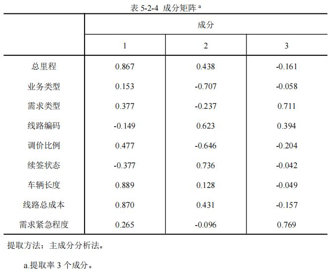
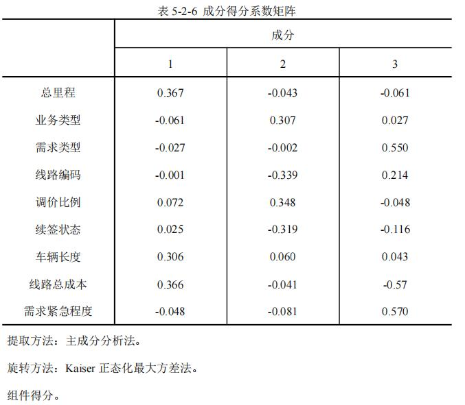
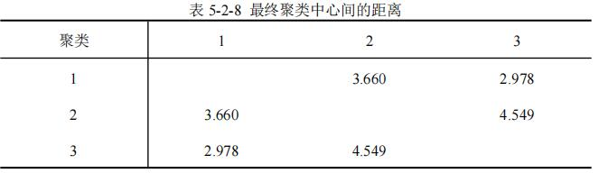
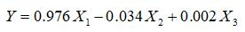
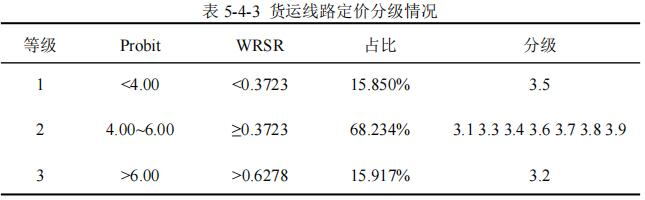

摘要
-
为规范运输市场，国家交通运输部引入无车承运人行业，其承运线路的科学定价问题是众多无车承运人平台亟待解决的问题。
本文以分析影响线路价格的因素与承运路线价格的关系，研究承运线路的定价方法。
-
针对问题1，
我们首先对附件中所给数据特点进行分析，选取价格Y为被解释变量，
9个相关影响因子xi为解释变量。
之后将各指标量化，剔除相似度小的异常样本，并对数据进行无量纲化处理。
然后通过建立聚类分析综合定价模型，利用主成分分析法对原始变量进行降维，得到3个主成分因子，
即平台资源X1（总里程、车辆长度、线路总成本）、交易状态X2（业务类型、线路编码、调价比例、续签状态）和运输要求X3（需求类型、需求紧急程度）。
最后通过建立多元回归模型Y=0.976X1-0.034X2+0.002X3，研究各项指标之间的数量关系，并进一步进行定性分析。
-
针对问题2，
我们建立基于秩和比的综合评价模型，根据公式（5-3-2）计算各个货运线路定价的WRSR值，再由熵权法计算原始矩阵的权重系数以及加权秩次。最后根据计算结果，列出WRSR值的列表，确定分档排序的界限，
对各影响因素进行分档排序，确定分布直线回归方程WRSR=-0.1497+0.1300×Probit，对货运线路定价影响进行分级评估（分级情况见表5-3-2）。
-
针对问题3，
在问题1、2的基础上，建立多元回归模型，解释变量为模型分析完成之后的7个主要因子，被解释变量为定价，通过历史数据求得回归方程：
Y=178.989+5.996x1+220.983X2-36.783x3-2.140x4+49.649x5+0.830x6-11.126x7,
再将附件2中给出数据代入模型中进行计算，根据附件3给出的相关参数即可得到一次报价。然后，我们制定相关定价策略来确定合理的调价比例。
结合合理性策略，最大利润策略及薄利多销策略，通过二分法优化确定调价比例，从而算出来三次报价（见支撑材料）。
最后，我们再次利用秩和比评价模型对附件2所求得的线路定价进行评价
-
针对问题4，
我们根据所建立模型以及相关文献的研究，结合道路未来货物运输市场的发展趋势对无车承运人平台作出中肯的评价和建议。
研究表明，无车承运人具有资源整合能力强，订单处理效率高，品牌效应广等优点，
可以在短时间内处理大量订单且定价合理。
并针对同时还存在缺乏合理担保机制，动态定价机制不成熟等问题作出薄利多销和调整管理制度等合理建议。
-
关键词：基于马氏距离的数据剔除算法、聚类分析、多元回归分析、秩和比评价法、BP神经网络模型
一、问题重述
1.1 问题背景
-
自国内公路运输市场开放以来，逐渐形成了“小，散，乱”的发展现状。为规范运输市场，国家交通运输部办公厅于2016年9月初步公布了 48 个无车承运人试点平台。
随着我国无车承运行业的逐步兴起，承运线路的科学定价问题成为众多无车承运人平台亟待解决的问题
1.2 问题重述
-
本研究以无车承运人的视角，采用动态定价的形式，将需要承运的线路任务以一定价格提前发布到网络平台上供承运端司机浏览并决定是否承运该运输任务。而承运端的司机会根据发布的线路任务和价格判断是否接单，
若司机接单成功，此线路任务随即下架。若在给定的时间内，该任务没有司机接单，则该线路任务就可以进行调价，且每条线路任务最多允许2次调价。
-
基于以上背景，我们的团队需要根据附件给出的数据寻找科学的定价方案，通过数学建模的方法解决以下问题：
-
问题一：
通过定量分析的方法，研究并确定影响无车承运人平台进行货运线路定价的主要因素有哪些。
-
问题二：
根据附加1中的数据，通过建立评价模型，对已经成交货运线路历史交易数据中的定价进行评价。
-
问题三：
建立关于线路定价的数学模型，通过对影响因素的分析，制定科学的调价策略，求出附加2的线路任务的三次报价以及总成本定价；通过评价模型，对我们给出的线路任务定价进行评价。
-
问题四：
根据你们的研究，给无车承运人平台写一封建议信，帮助其科学定价。
二、问题分析
2.1 问题1的分析
-
无车承运人平台进行货运线路定价的主要因素分析，一般选用因子分析、主成分分析与聚类分析等多元回归分析算法。
首先我们可以对附件中所给数据特点进行分析，选取价格为被解释变量而相关影响因子为解释变量。之后将各指标量化，并剔除相似度小的异常样本。然后将对于数据进行无量纲化处理，利用主成分分析法对原始变量进行降维。
最后可以通过建立多元线性回归模型对主要因素进行定性分析。
2.2 问题2的分析
-
问题2属于评价与决策类问题，此类问题一般用层次分析法、秩和比法等评价模型，其中层次分析法主观性较强。由于以上原因，我们可以建立基于秩和比的综合评价模型。
在基于秩和比的评价过程中，可以对评价的历史交易数据进行打分，根据得分的分数由高到低对历史成交数据进行排序，通过确定分档排序的界限，对货运线路定价影响进行分级评估。
2.3 问题3的分析
-
线路定价的模型需要基于问题1、2的研究过程，我们可以建立多元回归模型，解释变量为模型分析完成之后的主要因子，被解释变量为定价，通过历史数据求得方程常数与变量系数。
再将附件2中给出数据代入模型中进行计算，根据附件3给出的相关参数即可得到一次报价。
然后，我们需要制定相关定价策略，即确定合理的调价比例。结合合理性策略，最大利润策略及薄利多销策略，通过二分法优化确定调价比例，从而算出来三次报价。
2.4 问题4的分析
-
根据模型研究的过程，进行总结，指出当前无车承运的优点和存在的问题，并给出合理的建议。
三、模型假设
-
1.假设附件样本容量足够大，样本数据能够反映具体情况；
-
2.假设文中所引用的文献和结论均正确可靠；
-
3.假设各线路任务全部为固定车型的整车任务，不可拼接。
-
4.假设某个确定的任务，三次报价中有一次成交，则后续价格将不再考虑。
四、定义与符号声明
| 符号 | 符号意义 |
| X | 货运线路定价的影响因素 |
| xi | 货运线路定价的影响因素i/td> |
| Xi | 影响货运线路定价的主成分因子i |
| Pamount | 载荷矩阵 |
| n | 样本数量 |
| m | 变量数目（评价指标数目） |
| Ti | 样本i的得分向量 |
| D | 样品到平均光谱的马氏矩阵 |
五、模型的建立与求解
5.1 数据预处理
- 5.1.1 指标体系的建立
-
根据附件的数据，货运线路定价的影响因素可以选取线路价格为被解释变量而相关影响因子为解释变量，
解释变量包括：里程数量、业务类型、调价比例、线路编码、续签状态、运输时间长短、需求状态也可以考虑外生变量如消费者偏好、国家政策扶持等等。将有关因素量化，并对其进行无量纲化处理即统一单位。
- 5.1.2 基于熵值法的信贷风险量化分析
-
针对附件给出的上万条数据，显然需要进行一些预处理。我我们选择了PCA结合马氏举例法剔除红外异常样品。先利用主成分分词(PCA)将数据降维，以消除众多信息共存中相互重叠的信息部分。结合影响线路定价的因素，
利用得分数计算马氏距离，将相似度低的原样本进行剔除。具体方法如下：
-
首先是计算得分，其中X为相关因子矩阵，P为载荷矩阵，n为样品数，m为变量数，N为主成分数。

-
然后计算校正集样品到平均光谱的马氏矩阵，其中M代表因子分析中得分阵的协方差阵，Ti为样本i的得分向量。

-
而后检验样品中奇异样品存在的阈值范围。

-
当`D_i>=D_i'`则认为相关因子与线路定价在主成分空间中相似，`D_i-D_i'`值越小，相似度越高。
通过设置不同的阈值范围参数从而调节相似度的高低。当值越小，相似度越低，成为异常因子的可能性越大
-
通过此模型对附件数据预处理，异常数据的直观反映如下图所示。
-
因此，利用马氏距离法能有有效剔除样品集中存在的异常样品，提高了校正模型的预测能力
5.2 问题1的解答
- 5.2.1 基于聚类分析的货运线路定价影响因素分析
-
聚类分析是解决定价影响因素细分问题的常用方法之一，是基于事物本身特性研究个体的分类方法。
聚类分析的原则是在划分后的各子类中，同一类的个体有非常大的相似性，不用类的个体有着明显的差异。
本研究中，运用聚类分析的思想方法研究影响无车承运人平台进行货运线路定价的主要因素是不需要提前拟定分类标准的，人为因素不会再聚类过程中进行任何干扰。
此方法能保证完全从预处理后的样本数据的角度综合分析各个属性，最终分类的结果可以充分体现各类因素的特征和区别。
基于聚类分析法的货运线路定价因素分析流程见图。
-
1.原始变量的提取
-
从问题出发，选择影响无车承运人平台进行货运线路定价的主要因素作为聚类分析的原始变量，并对变量类型和储存类型进行定义。
-
这里`x_i`代表附件数据中的总里程、业务类型、需求类型、线路编码、调价比例、续签状态、车辆长度、线路总成本、需求紧急程度，同时还可以考虑外生变量如消费者偏好、国家政策扶持。
-
2.原始变量的降维
-
出于尽量全面了解事物信息的目的，大多数研究者往往会对事物相关的众多属性因素进行大量观测，并通过统计分析收集到大量数据来探索目标事物的规律。众多变量、大样本的确能够在很大程度上展现出目标事物全面丰富的信息，但是变量间的相关性会对问题的分析产生很大的干扰。
相反，单独对各个变量进行分析又容易陷入局限性的误区，不能从整体上把握目标事物的特征，这样非常容易得出局限且偏颇的结论。
-
所以，有必要寻找一种技能减少原始变量个数，又能尽量保留原始变量所包含信息的方法。本文利用降维的方法来选取具有代表性的变量。因子分析是降维的一种常用方法，其能够在具有相关性联系的变量中，
准确找到不能通过直接观测得到但对可观测变量的变化有一定支配作用的潜在因子。将相关性高的变量用同一因子表示，可以部分减少变量数量。本研究通过SPSS软件对原始变量进行降维。
-
3.样本聚类
-
利用降维后提取得到的主成分因子作为分类标准，对从附件中影响无车承运人平台进行货运线路定价的主要因素的相关数据进行聚类并对聚类结果进行检验和评价。聚类结果理想，则进入货运线路定价影响因素的下一步细分；
反之，则通过因子分析法寻找新的分类变量，作为重新聚类的输入。
-
4.子类定价影响因素描述
-
从各个分类变量的角度，对聚类的结果在各个分类变量上的统计特征做出描述并进行分析。适当合并形成一定规模的细分子定价影响因素，并对其进行具有现实意义的描述。
-
本研究使用SPSS软件实现聚类分析的过程。
- 5.2.1.1 原始变量降维
-
首先从附件数据中选取出降维前最初的原始变量，主要有总里程、业务类型、需求类型、线路编码、调价比例、续签状态、车辆长度、线路总成本、需求紧急程度。各原始变量的定义如下：
-
1.数据预处理
-
针对附件1给出的一万六千多条数据，本文利用PCA结合马氏举例法剔除红外异常样品。结合所选取的货运线路定价的影响因素，利用得分数计算马氏距离。
通过设置不同的阈值范围参数从而调节相似度的高低。将相似度低的异常因子剔除。
-
在主成分分析前，还要对附件1的数据进行无量纲化处理，即统一单位。
-
2.KMO检验及Bartlett检验
-
因子分析前，首先需要检验原始变量的适用性。在SPSS中因子分析里描述统计项里可以计算Kaiser-Metey-Olkin统计量，并进行Bartlett球形度检验。检验结果如表5-2-2所示。KMO值0.600以及Sig值小于0.05，表明原始变量间存在一定相对性，适合进一步进行因子分析。
-
采用主成分分析法从原始变量中抽取因子，通过特征值大于1 的条件判断因子个数。表5-2-3和图5-2-1显示，9个成分指标对于主成分分析的贡献能力略有偏差，前3个成分指标特征值均大于1，表明其对于主成分分析的贡献更为显著，可以解释原来72.804%的信息，解释效果良好。

- 
-
从成分矩阵表5-2-4可以看出，不同的原始变量在抽取出的主成分1、2、3中的载荷差异并不大，这不便于通过原始变量解释各主成分的含义。所以，为了进一步描述各变量在主成分当中的归属情况，在此利用旋转指令中的最大方差法Varimax来进行处理。正交旋转法具有Kaiser标准化，能使每个主成分上具有最高载荷的变量数最小，从而达到简化主成分解释的目的。
采用最大方差法得到的选择成分矩阵和旋转空间中的成分如表5-2-5。
-
结合表5-2-5和图5-2-3容易看出，经过因子分析后得到的3个主成分较好的代表了个原始变量。其中，第1个主成分较好的描述了总里程、车辆长度、线路总成本3项因素，第2个主成分较好的描述了业务类型、线路编码、调价比例、续签状态4项因素，第3个主成分较好的描述了需求类型、需求紧急程度2项因素
- 
-
综上所述，经过降维后共得到3个主成分，这3个主成分分别从不同方面代表了原始的9个变量指标，降维效果良好。各原始变量指标在3个主成分上的成分得分系数矩阵如表5-2-6所示。将提取出的主成分作为下一步聚类分析的输入变量。
-
经过原始变量降维得到主成分因子之后，下一步是对影响无车承运人平台进行货运线路定价的主要因素进行聚类。聚类分析主要有两步聚类、快速聚类和层次聚类三种方法。考虑到样本观测量较大，本研究选择处理速度更快的快速聚类法（K-means）进行聚类分析。
-
以3个主成分因子作为分类变量，通过SPSS软件中的K-means聚类法实施聚类。结合样本量因素，设置聚类数方面，这里拟将处理后样本分成3类。设置最大迭代次数100次，经过迭代运算后，SPSS输出的最终聚类中心表如表5-2-7所示。
-
各最终聚类中心间的距离如表5-2-8所示
- 
-
为保证个细分子类之间的差异性，聚类过程中同时进行了ANOVA统计量分析（方程分析），其结果如表5-2-9所示
-
从类间均方程、类内误差均方差以及Sig值来看，此聚类过程效果理想，各子类间差异显著。最终的聚类分析结果中，各子类的样本数量如表5-2-10所示。
- 5.2.1.3 细分影响无车承运人平台进行货运线路定价的主要因素的描述
-
完成影响无车承运人平台进行货运线路定价的主要因素分类后，还需要进一步面熟个子类定价影响因素中的顾客特征的分布情况，从而得到各子类定价印象因素的总体特征。
-
利用快速聚类（K-means）分析方法，从上表可知：聚类类别群体对于所有研究项均呈现出显著性(P<0.05),意味着聚类分析得到的3类群体，在研究项上的特征具有明显的差异性。
且标准化的系数F在合理的范围内表明各个因子之间的关联性造成的影响较小，使结论的误差在合理的范围内。
-
通过样本聚类，在因子1中，总里程、车辆长度、线路总成本分别占0.867、0.899、0.870，均为正比例且远高于其他变量对因子1的影响，因子1易随三组自变量发生改变，
故因子1可根据三种变量的影响可命名为平台资源因子以描述三个自变量对价格的影响以及三种自变量互相的影响。
-
在因子2中，业务类型、线路编码、调价比例、续签状态占比远高于其他变量，因子2的变化可近似描述三组自变量的变化，同理可将因子二命名为交易状态代替四个自变量的影响。
-
在因子3中，需求类型，需求紧急程度占比分别为0.818、0.817，故因子三命名为运输要求因子来近似表述两自变量。通过样本聚类，平台资源因子，
运输要求因子和交易状态因子基本代表全部案例数，聚类效果理想。
- 5.2.2 基于回归分析的货运线路定价影响因素的研究
- 5.2.2.1 构建多元线性回归模型
-
为了更全面分析3类因素对无车承运人平台进行货运线路定价的影响，本文将聚类得到的3个主成分作为自变量，线路价格作为因变量，建立多元回归模型：
-
其中，`X_i(i=1,2,3)`为选取的3类影响因素的主成分，`β_i(i=1,2,3)`为相应的系数，`ε~N(0,σ^2)`表示随机误差。此基础上研究各项指标之间的数量关系，并进一步确定回归方程进行预测及分析
-
采用SPSS软件作为统计分析工具，将聚类后的数据输入软件对多元回归模型各项参数的数据进行处理，进行最小二乘估计，得到参数估计值和各项常规检验统计量值等数据。
-
根据表5-2-13的结果，可得到初步的多元线型回归方程：
-
经过标准化处理后，得到多元线型回归方程：
- 
- 5.2.2.2 结果分析与模型检验
-
（1）拟合优度检验和F检验。根据表5-2-12的结果显示，R方等于0.954，修正后的R方等于0.954，两项数据说明该模型对样本的拟合程度非常好。
之后进行F检验，首先提出假设H0：`β_1=β_2=β_3=0`，给定显著性水平`α=0.05`，在F检测表中可以查出自由度为k-1和n-k的临界值为`F_α(k-1,n;k)`（n为样本数量，k为自变量个数），
由表5-2-12可以得出`F=109877.005>F_α(k-1,n-k)`，所以拒绝原假设，
说明回归方程显著，即里物理条件因子`X_1`，运输要求因子`X_2`，交易状态因子`X_3`的组合对无车承运人平台进行货运线路定价的影响是显著的。
-
（2）回归系数的显著性检验。回归方程中已选取回归效果较强的自变量组，但总体回归效果不能说明每个自变量`x_i(i=1,2,3)`对因变量Y都是重要的。
需要通过系数`β_i`的取值来判定每个自变量`x_i(i=1,2,3)`是否显著。
检验假设H0：`β_i(i=1,2,3)`，根据多次检查输出的参数估计结果，我们发现，
在F分布表中可查得临界`F_X(1,n-m-1)
-
（3）通过对回归系数的分析，平台资源`X_1`、交易状态`X_2`与最终定价（不含税）成正相关状态，运输要求`X_3`与最终定价（不含税）成负相关状态。
5.3 问题2的解答
- 5.3.1 基于秩和比法的定价评价模型
- 5.3.1.1秩和比评价法原理及步骤
-
秩和比综合评价法进行评价指标参数辨识的基本原理为针对每类评价指标构成的一个行列数据矩阵，首先通过秩转换，获得其无量纲统计量RSR或WRSR。然后运用参数统计分析的概念和方法，
研究RSR或者WRSR的分布，以其对评价对象的优劣直接排序或分档排序，从而综合评价各评价指标下相关因子对线路定价。其过程如下：
-
1.编秩
-
针对每类评价指标中n个线路任务m个线路价格评价指标构成的数据矩阵，
编出各个线路价格对各个线路任务的秩，运用非整次秩和比法将定量的指标值转换为半定量的秩次，所编的秩次除了最大指标值和最小指标值为整数外，其余为非整数，如公式（5-3-1）
-
式中，R为秩次，n为样本数，X为原始指标值，Xmin、Xmax分别为最小原始指标值和最大原始指标值。
-
2.计算加权秩和比WRSR
-
提出加权秩和比指标WRSR，计算各因素的加权秩和比WRSR
-
其中，Wj为j个指标的权重系数，表现典型评价指标中各因素对货运线路定价的不同影响程度。
-
3.编秩WRSR频率分布表，计算各组累计频数
-
计算概率单位，编秩WRSR频率分布表，列出各组频数f，计算各组累计频数；
确定各组WRSR秩次范围R和平均秩次，计算累计频率P=AR/n；将百分率p转换为概率单位Probit，Probit为百分率p对应的标准正态离差i加5，
一般按照查询百分数与概率单位对照表，最后向下的累计频率按照1-1/4×n估计。
-
4.计算货运线路定价分布直线回归方程
-
以累计频率所对的概率单位Probit为自变量，以WRSR值为因变量，计算直线回归方程，即WRSR=a+b×Probit，其中a、b为计算得到的常系数。
-
5.分档排序
-
将货运线路定价分档排序：依据各分档情况下概率单位Probit值，按照回归方程推算所对应WRSR估计值，
然后根据常用的分档数对应的百分位数及概率单位表，对评价对象分档排序，实现货运线路定价分级。
- 5.3.1.2 熵权法计算评价指标的权重系数
-
现有n个待评价项目，m个评价指标，构成原始数据矩阵
-
求取各个指标值权重的过程为：
-
1）先求取m个指标值的第i个项目的指标值的比重Pij为
-
2）计算第j个指标的熵值ej为
-
3）计算第j个指标的熵权Wj为

- 5.3.1.3基于秩和比综合评价法的影响因素分级
-
秩和比综合评价法首先利用秩和比加权法确定了各因素的影响程度，为了对已经成交货运线路历史交易数据中的定价进行评价，
选取相关因素直方参数重构原始评价矩阵，其形式为
-
由于各因素评价指标为高优指标，因此定义了秩和比指标值WRSR整体描述了货运线路定价影响程度程度。
根据公式（5-3-2）计算各个货运线路定价的WRSR值。再由熵权法计算原始矩阵的权重系数以及加权秩次。最后根据计算结果，列出WRSR值的列表，确定分档排序的界限，对各影响因素进行分档排序，确定分布直线回归方程，对货运线路定价影响进行分级评估。
- 5.3.2 对已经成交货运线路历史交易数据中的定价进行评价
-
结合前文所述的评估原理，对附件2中已经成交货运线路历史交易数据中的定价进行评价。首先进行主成分分析，各主成分的特征量、单个贡献率、累计贡献率见前文表5-2-3（总方差解释）。其贡献了直方图如图5-3-2。
-
选取3个主成分代表原始8维指标，进行模糊聚类分析。聚类的最佳分类数据根据评价准则Vxb确定，原始数据分类数与Vxb的关系如图所示。
-
根据图5-3-2表明，在分类数为3时，取值最小，故将原始数据划分成3类主成分。根据主成分绘制数据的各项参数，分析附件2中成交货运线路历史交易数据中的定价。
-
主成分分析后3类成分的数值作为评价矩阵K，利用公式（5-3-2）计算其RSR矩阵，之后计算原始矩阵R的权重系数，
再根据公式（5-3-4）计算原始矩阵每类主成分评价指标的加权秩次比WRSR，取平均值做为每一项货运线路定价的WRSR值，按照WRSR从大到小顺序列写表5-3-1，并分别计算每日WRSR对应的概率单位。
-
根据表5-3-1的数据，以Probit值为自变量，WRSR值为因变量，计算一元直线回归方程。计算结果为
-
模型相关系数为0.9408接近于1，说明其线性拟合程度较高。经F检验，F=23647.801，
P=0<0.05，说明具有统计意义
-
将附件2的货运线的定价情况分档，根据常用的分档数对应的百分位数及概率单位表，将数据分成了3档，
分别为`P<15.871%，Probit<4.00`；`15.871%<=P<=84.128%，4.00<=Probit<=6.00`；`P>84.128%，Probit>6.00`。因此，定价分档如表5-3-2。

5.4 问题3的解答
- 5.4.1 多元线性回归方程的建立
- 5.4.1.1 指标选取
-
在第一问中，我们经过降维和聚类分析最终确定了九个相关因子。但结合附件二中给出的数据与本题实际要求，其中的调价比例和线路总成本虽然影响最终报价，
但此题要求给出三次报价，我们首先需要确定下一次报价，才能够去确定调价比例以及总成本。
因此，我们选取总里程`x_1`、业务类型`x_2`、需求类型`x_3`、线路编码`x_4`、续签状态`x_5`、需求紧急程度`x_6`和车辆长度`x_7`这七个影响因素作为自变量，并进一步确定回归方程进行预测和分析。
- （5.4.1.2 模型构建与求解
-
经过前文分析，我们建立线路价格与七个影响因素的多元回归模型：
-
根据上述模型，将附件一中处理后的数据代入进行计算，得到`β_i(i=0,1,2...7)`的值，即构建了多元线性回归方程：
-
其拟合结果如图所示
-
由图可见，拟合效果较好，模型成立。
-
之后，将附件2中的数据代入已构建好的多元线性回归方程，计算出线路报价。
-
而关于总成本的定价计算同理，建立与七个变量的多元线性回归方程，利用历史数据求解，代入新数据计算，所求结果见附件3。
- 5.4.1.2 模型检验
-
我们可以通过拟合优度检验，F检验和t检验来验证此回归方程显著性。经过前文中的计算，各项常规检验统计量的值如下表
-
其中`R^2=0.9791`，说明该模型对样本的拟合程度非常好。
之后进行F检验，首先提出假设H0：`β_1=β_2=β_3=0`，给定显著性水平`α=0.05`，
在F检测表中可以查出自由度为k-1和n-k的临界值为`F_α(k-1,n-k)`（n为样本数量，k为自变量个数），
由表5-2-12可以得出`F=107300.008>F_α(k-1,n-k)`，所以拒绝原假设，说明回归方程显，即自变量因子对因变量的影响显著。
t检验是用于对给变量系数显著性检验的，我们计算得到的`p<0.05`，说明我们选取的自变量对因变量解释性很强。
- 5.4.2 定价策略
-
三次报价，相当于平台与承运司机的一个价格博弈，报价高虽然会给平台带来更大的利润，
但任务未被承运的风险也会加大；报价低虽然能最快速促进成交，但可能会有较高的承运成本。我们认为，三次报价可以遵循以下策略：
-
（1）合理性策略
-
合理性策略指的是价格制定要合理，这要求我们的定价能够符合相关影响因素的调节，不能出现某次价格与我们前文所讨论的影响因素无关的情况。
因此，我们可以选取前文中，我们通过七个影响因素建立的多元回归模型，是比较理想与合理的报价，我们可以将其作为第二次报价。这样的选择更稳妥，且调节空间更大。
-
（2）最大利润策略
-
这是博弈中经常用的方法，在初期指定在司机心理预估范围内的最低价格，以达到己方的最大利润。
我们结合线路报价历史数据中的调价比例，计算出调价比例的均值为1.1796倍，最小调价比例为0.5379倍。显然，我们不可能选取最小调价比例作为我们第一次报价的计算系数。
因此，我们考虑在最小值与平均值之间找到一个比例，使得报价尽可能低且不会低出司机的底线。结合二分法优化，我们选取了两者之间第一次二分的结果，即0.8588倍。将第二次的理想报价结果乘以此调价比例，即得到第一次最大利润报价。
-
（3）薄利多销策略
-
由于最多只能三次报价，任务未被承运会带来一定损失。因此，我可以考虑在第三次报价时，稍微提高价格，以此提升司机接单的概率同时是自己的成本不至于过高。
我们同样结合历史数据中的调价比例，其中最大调价比例为3.2129倍。显然，我们不可能选取这个最大调价比例作为，这回使我们的成本过高。因此，我们同样结合二分法优化，经过多次实验，我们选取了最大值与平均值之间第五次二分的结果，即1.2431倍。将第二次的理想报价结果乘以此调价比例，即得到第三次薄利多销的报价结果
- 5.4.3 评价所求出的附件2的线路任务的定价。
-
我们在第二问中已经说明了一种基于秩和比法的定价评价模型，我们在此直接利用此方法，对我们通过多元线性回归方程所求出的线路价格进行评价，其贡献率直方图如图5-4-2。
-
我们根据第二问计算公式，可以计算得到WRSR值，以及WRSR对应的概率单位。
-
模型相关系数为0.9408接近于1，说明其线性拟合程度较高。经F检验，F=23647.801，P=0<0.05，说明具有统计意义
-
将附件2的货运线的定价情况分档，根据常用的分档数对应的百分位数及概率单位表，将数据分成了3档，
分别为`P<15.871%，Probit<4.00`；`15.871%<=P<=84.128%，4.00<=Probit<=6.00`；`P>84.128%，Probit>6.00`。
因此，定价分档如表5-4-2。
- 
6.1 模型的评价
-
致无车承运人平台：
-
您好！
-
根据我们对模型分析和文献查阅可知，总里程、业务类型、需求类型、线路编码、续签状态、需求紧急程度和车辆长度这七个影响因素对定价有着直观的影响，
政策因素和消费者偏好从整体方面对价格产生影响，此外报价制度和也影响到平台的经济效益，即最多只能三次报价，任务未被承运会带来一定损失，据此我们总结出现有无车承运人平台在效率、定价等角度的优缺点，并以此提出了几条中肯的发展建议。
-
1.拥有先进的现代物流理念和丰富的运营管理经验。无车承运人是集知识密集和技术密集于--体的现代服务企业，知识驱动型的发展模式使其形成了先进的物流发展理念和丰富的管理经验，为现代物流的发展打下了良好的基础。
-
2.能够系统整合和集成社会零散物流资源，提高了运输组织效率.无车承运人拥有发达的信息化网络，掌握庞大的货源信息，了解当地的运力结构和产品类型，通过对实体资源的有效整合,从而实现虚拟与实体网络的有效结合，
实现了物流的网络化和规模化运营，提高了物流运作的整体效率。
-
3.拥有较强的低成本扩张能力，能够快速地扩大服务范围。由于无车承运人无需购买运输车辆，轻资产运营的特点一方面降低了企业规模扩张的成本，另一方面企业可以将有限的资金商效的用于信息资源的获取环节，扩大无车承运业务的辐射范围，增强企业的核心竞争力。
-
目前，国内无车承运人平台发展尚未成熟，存在制约无车承运人发展的瓶颈。由于无车承运人其特有的“无车承运"模式与中国既有的“有车承运"管理制度相冲突。不仅使其难以获得合法的经营资格,而且在税收、异地设点等方面存在诸多障碍。且由上述分析可知，企业若想获取道路运输许可证必须自备运营车辆。这就决定了无车承运入并不具备办理道路运输经营许可证的条件。而是否具有经营资质往往是货主考虑是否与企业合作的重要因素。
由此可见，运输经营资质获取难将成为无车承运人发展的程惜。
-
因此，基于前文的分析研究，我们对无车承运人平台发展提出几点建议。
-
一、建立责任保险制度。无车承运人可以经营所有类型的陆上运输、多式联运和物流服务，承担从发货地到目的地的全部责任。原有的保证金制度很难达到防范风险的效果，对于货主的损失大多数情况也是无力偿还。因此推广建立责任保险制度比保证:金制度应该更为有效,更易于被企业所接受。
-
二、目前我国的保险公司在无船/车承运人责任险方面尚属空白，建议出台相关规定，明确承保范围、费率标准、责任风险分担等具体规定,解决目前保费高、责任范围窄、责任限额苛刻，承运人不愿意投保问题。这样一来，才能承运的思路，资本金可以不用来购买车辆,进而转变为对委托人权利的保护，大力发展无车承运。
-
三、调整既有的管理制度，从单纯注重运力管理,转向注重物流运输承运人的管理，促进“无车承运人”发展。对货运代理、无车承运人实行分类管理，根据业务运作模式的差异，对各自的准入退出条件、服务规范及标准、承担的法律责任、市场诚信及保险制度进行详细规定。
- 数学建模团队
六、灵敏度分析
-
灵敏度分析是研究与分析一个系统（或模型）的状态或输出变化对系统参数或周围条件变化的敏感程度的方法。在最优化方法中经常利用灵敏度分析来研究原始数据不准确或发生变化时最优解的稳定性。通过灵敏度分析还可以决定哪些参数对系统或模型有较大的影响。我们利用MATLAB对多元回归模型进行灵敏度分析以进一步检验模型效果。
-
首先，我们进行的单因素方差分析，结果如下表
-
同时，我们可以画出标准化残差的直方图和正态概率图，如图:
-
灵敏度分析包括局部灵敏度分析和全局灵敏度分析。局部灵敏度分析只检验单个参数的变化对模型结果的影响程度；全局灵敏度分析则检验多个参数的变化对模型运行结果总的影响。
-
针对本题的多元回归模型，我们选取了定性全局灵敏度分析法中的多元回归法。
其基本原理为：若一个模型具有n个参数，而每一个参数的概率分布都分成m个区间，
那么将有`n^m`个取样组合。而实际上，只是取m个样。
其做法是：把n个参数的取值排列成一个n×m的矩阵，把矩阵每一列元素的次序随机打乱，就得到了所有参数的m个输入。
矩阵的每一行作为各个参数的输入值，运行模型获得模型的模拟结果。用模拟结果与各输入参数的多元回归系数或偏相关系数表示各参数的灵敏度大小。
-
多元回归灵敏度分析表明，在七个影响因素中，总里程的灵敏度最高，业务类型和紧急程度的灵敏度较低，需求类型、线路编码、续签状态和车辆长度灵敏度中等
-
我们同样可以利用逐步回归的方法确定各参数的灵敏度大小，其得到的结果同上文基本一致，在此不多赘述
-
七、模型的评价与推广
7.1 模型的评价
- 7.1.1 问题1的模型评价
-
（1）优点：聚类回归模型的优点就是直观，结论形式简明。
根据主成分分析分析可以把九个变量归位三类主成分因子，分别为客服沟通状态、平台资源数量和支付结算需求，使其在因子分析后并不是对原有变量的取舍，
而是根据原始变量的信息进行重新组合，找出影响变量的共同因子，化简数据。同时它通过旋转使得因子变量更具有可解释性，根据模型检验得出的共同因子进行多元回归的准确性较高。总体回归清晰性高。
-
（2）缺点：在样本量较大时，要获得聚类结论有一定困难。
由于相似系数是根据被试的反映来建立反映被试间内在联系的指标，而实践中有时尽管从被试反映所得出的数据中发现他们之间有紧密的关系，但事物之间内在联系不大。
- 7.1.2 问题2的模型评价
-
（1）优点：秩和比法是一非参数法为基础，对指标的选择无特殊要求，始于各种评价对象；测方法计算用的数值是秩次，可以消除异常值的干扰，它融合了参数分析的方法，
结果别单纯采用非参数法更为精确，既可以直接排序，又可以分档排序，使用范围广泛。
-
（2）缺点：秩和比法是的排序主要依据是利用原始数据的秩次，最终算出的RSR值反映的是综合秩次的差距，而与原始数据的顺位间的差距程度大小无关，
这样在指标转化秩次时会失去一些原始数据的信息，如原始数据的大小差别等等。
- 7.1.3 问题三的模型评价
-
（1）优点：多元线性回归是多元回归最基础、简单的一种，且实际意义更大。且运用回归模型，通过标准的统计方法可以计算出唯一的结果。在制定报价策略时，考虑了价格策略中定价目标和估计成本因素，
运用了心理定价等定价方法，能够代表一定程度上司机与平台的价格博弈。
-
（2）缺点：多元线性归回模型在自变量较多时，无论有无统计学意义，决定系数的值都会变大，这样会使检验的效率变低。同时，我们所制定的三次报价策略并不完全能体现平台与司机的价格博弈，司机接受的报价还有更多方面的影响因素。
6.2模型的推广
-
我们选取了神经网络多元线性回归来改进我们第三问的多元线性回归模型
-
BP神经网络模型由输入层。隐含层和输出层组成，隐含层和输出层可以一层或多层构成。训练过程中输入信号从输入层通过作用函数，逐层向隐含层、输出层传播，如果得不到期望输出，则转入反向传播，不断修改各层神经元连接权值，从而训练出最优神经网络模型
-
对于一般模式的识别问题，3层网络可以很好地解决，这其中，隐含层神经元个数与输入层神经元个数之间的近似关系为。我们选用了输入层神经元为7个，输出层神经元为1，因此，隐含层神经元个数可以选择为15个。
-
我们建立神经网络多元线性回归，其神经网络训练拟合度如图。可以看出，拟合效果非常好
-
其均方误差图如图
-
我们发现，神经网络多元线性回归模型中`R^2`为0.9985，对比多元线性回归的`R^2`为0.9791，其精度有了明显提高，说明BP神经网络整体拟合度要高于多元回归模型。
八、参考文献
[1] 袁丙，大样本的异常数据剔除方法[N]，农业环境科学学报，10：24-25，1984。
[2] 张文彤，SPSS统计分析高级教程[M]，高等教育出版社：2013。
[3] 王霞，包启挺，聚类回归分析(CLR)在市场细分研究中的应用[J]，数理统计与管理，27(2)：338-346，2008。
[4] 周琪琪，邵振国，林韩，基于秩和比综合评价法的用户谐波危害分级评估[J]，电力电容器与无功补偿，39(5)：119-121，2018。
[5] 方慧敏，无车承运人平台服务质量因素研究[D]，南京大学：53-57，2017。
[6] 徐崇刚，胡远满，常禹，生态模型的灵敏度分析[A]，中国科学院沈阳应用生态研究所，15(6)：1056-1062，2004。